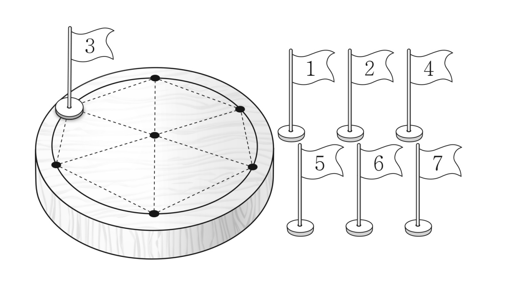

그림과 같이 원판에 반지름의 길이가 인 원이 그려져 있고, 원의 둘레를 등분하는 개의 점과 원의 중심이 표시되어 있다. 이 개의 점에 부터 까지의 숫자가 하나씩 적힌 깃발 개를 각각 한 개씩 놓으려고 할 때, 다음 조건을 만족시키는 경우의 수를 구하시오. (단, 회전하여 일치하는 것은 같은 것으로 본다.) [4점]
깃발이 놓여 있는 개의 점 중 개의 점을 꼭짓점으로 하는 삼각형이 한 변의 길이가 인 정삼각형일 때, 세 꼭짓점에 놓여 있는 깃발에 적힌 세 수의 합은 이하이다.

세 점 사이 거리가 모두 1이어야 하니까 거리가 1인 짝부터 찾는 거야. 둘레의 세 점은 서로 모두 이웃할 수 없어서 중심이 꼭 들어가.
판단중심의 수는 여섯 개 삼각형에 모두 들어가니까 중심의 수로 경우를 나누면 둘레에는 이웃한 두 수의 합 조건만 남아.
이면 둘레의 6이 어느 수와 이웃해도 ㉡을 어겨.
둘레의 7은 양옆에 서로 다른 두 수가 와야 하는데, 이면 7의 이웃이 될 수 있는 수가 많아야 1 하나라서 ㉡을 어겨.
주의이면 7도 6도 1, 2와만 이웃해야 해서 네 점만으로 한 바퀴가 닫혀. 나머지 4, 5가 들어갈 자리가 없는 거야.
중심은 회전해도 그대로이고, 한 배치를 여섯 번 돌리면 7이 둘레의 여섯 점에 한 번씩 와. 그래서 회전해서 같은 배치마다 7이 맨 위인 것이 딱 하나야.
세 자리가 한 줄로 이어져 있으니까 5와 6이 붙지 않으려면 4가 가운데에 와야 하고, 양 끝 5, 6의 순서만 2가지야.
2부터 7까지에서 합이 12 이상인 쌍은 둘 다 7이 끼어 있어. 그래서 7의 양옆만 조심하면 나머지 세 자리는 아무렇게나 놓아도 돼.
센 배치 하나를 골라 여섯 삼각형의 세 수의 합을 모두 더해 보면 ㉡을 만족하는지 바로 확인돼.